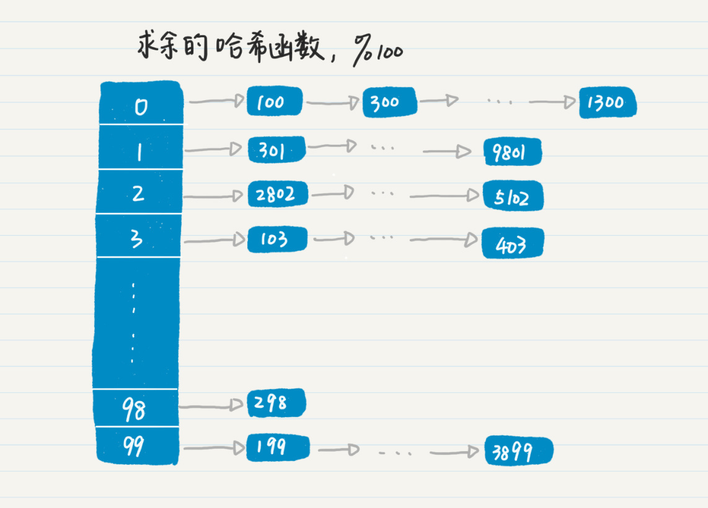

- 01 二进制：不了解计算机的源头，你学什么编程.md.html
- 02 余数：原来取余操作本身就是个哈希函数.md.html
- 03 迭代法：不用编程语言的自带函数，你会如何计算平方根？.md.html
- 04 数学归纳法：如何用数学归纳提升代码的运行效率？.md.html
- 05 递归（上）：泛化数学归纳，如何将复杂问题简单化？.md.html
- 06 递归（下）：分而治之，从归并排序到MapReduce.md.html
- 07 排列：如何让计算机学会“田忌赛马”？.md.html
- 08 组合：如何让计算机安排世界杯的赛程？.md.html
- 09 动态规划（上）：如何实现基于编辑距离的查询推荐？.md.html
- 10 动态规划（下）：如何求得状态转移方程并进行编程实现？.md.html
- 11 树的深度优先搜索（上）：如何才能高效率地查字典？.md.html
- 12 树的深度优先搜索（下）：如何才能高效率地查字典？.md.html
- 13 树的广度优先搜索（上）：人际关系的六度理论是真的吗？.md.html
- 14 树的广度优先搜索（下）：为什么双向广度优先搜索的效率更高？.md.html
- 15 从树到图：如何让计算机学会看地图？.md.html
- 16 时间和空间复杂度（上）：优化性能是否只是“纸上谈兵”？.md.html
- 17 时间和空间复杂度（下）：如何使用六个法则进行复杂度分析？.md.html
- 18 总结课：数据结构、编程语句和基础算法体现了哪些数学思想？.md.html
- 19 概率和统计：编程为什么需要概率和统计？.md.html
- 20 概率基础（上）：一篇文章帮你理解随机变量、概率分布和期望值.md.html
- 21 概率基础（下）：联合概率、条件概率和贝叶斯法则，这些概率公式究竟能做什么？.md.html
- 22 朴素贝叶斯：如何让计算机学会自动分类？.md.html
- 23 文本分类：如何区分特定类型的新闻？.md.html
- 24 语言模型：如何使用链式法则和马尔科夫假设简化概率模型？.md.html
- 25 马尔科夫模型：从PageRank到语音识别，背后是什么模型在支撑？.md.html
- 26 信息熵：如何通过几个问题，测出你对应的武侠人物？.md.html
- 27 决策树：信息增益、增益比率和基尼指数的运用.md.html
- 28 熵、信息增益和卡方：如何寻找关键特征？.md.html
- 29 归一化和标准化：各种特征如何综合才是最合理的？.md.html
- 30 统计意义（上）：如何通过显著性检验，判断你的A_B测试结果是不是巧合？.md.html
- 31 统计意义（下）：如何通过显著性检验，判断你的A_B测试结果是不是巧合？.md.html
- 32 概率统计篇答疑和总结：为什么会有欠拟合和过拟合？.md.html
- 33 线性代数：线性代数到底都讲了些什么？.md.html
- 34 向量空间模型：如何让计算机理解现实事物之间的关系？.md.html
- 35 文本检索：如何让计算机处理自然语言？.md.html
- 36 文本聚类：如何过滤冗余的新闻？.md.html
- 37 矩阵（上）：如何使用矩阵操作进行PageRank计算？.md.html
- 38 矩阵（下）：如何使用矩阵操作进行协同过滤推荐？.md.html
- 39 线性回归（上）：如何使用高斯消元求解线性方程组？.md.html
- 40 线性回归（中）：如何使用最小二乘法进行直线拟合？.md.html
- 41 线性回归（下）：如何使用最小二乘法进行效果验证？.md.html
- 42 PCA主成分分析（上）：如何利用协方差矩阵来降维？.md.html
- 43 PCA主成分分析（下）：为什么要计算协方差矩阵的特征值和特征向量？.md.html
- 44 奇异值分解：如何挖掘潜在的语义关系？.md.html
- 45 线性代数篇答疑和总结：矩阵乘法的几何意义是什么？.md.html
- 46 缓存系统：如何通过哈希表和队列实现高效访问？.md.html
- 47 搜索引擎（上）：如何通过倒排索引和向量空间模型，打造一个简单的搜索引擎？.md.html
- 48 搜索引擎（下）：如何通过查询的分类，让电商平台的搜索结果更相关？.md.html
- 49 推荐系统（上）：如何实现基于相似度的协同过滤？.md.html
- 50 推荐系统（下）：如何通过SVD分析用户和物品的矩阵？.md.html
- 51 综合应用篇答疑和总结：如何进行个性化用户画像的设计？.md.html
- 导读：程序员应该怎么学数学？.md.html
- 开篇词 作为程序员，为什么你应该学好数学？.md.html
- 数学专栏课外加餐（一） 我们为什么需要反码和补码？.md.html
- 数学专栏课外加餐（三）：程序员需要读哪些数学书？.md.html
- 数学专栏课外加餐（二） 位操作的三个应用实例.md.html
- 结束语 从数学到编程，本身就是一个很长的链条.md.html
- 捐赠
18 总结课：数据结构、编程语句和基础算法体现了哪些数学思想？
你好，我是黄申。
之前的17讲，我们从小处着眼，介绍了离散数学中最常用的一些知识点。我讲到了很多数据结构、编程语句和基础性算法。这些知识点看似是孤立的，但是内部其实有很多联系。今天这一节，我们就来总结一下前面讲过的内容，把之前讲过的内容串联起来。
数据结构
首先，我们来看一些基本的数据结构，你可别小看这些数据结构，它们其实就是一个个解决问题的“模型”。有了这些模型，你就能把一个个具体的问题抽象化，然后再来解决。
我们从最简单的数据结构数组开始说。自从你开始接触计算机编程，数组一定是你经常使用的数据结构。它的特点你应该很清楚。数组可以通过下标，直接定位到所需的数据，因此数组特别适合快速地随机访问。它常常和循环语句相结合，来实现迭代法，例如二分查找、斐波那契数列等等。
另外，我们将要在“线性代数篇”介绍的矩阵，也可以使用多维数组来表示。不过，数组只对稠密的数列更有效。如果数列非常稀疏，那么很多数组的元素就是无效值，浪费了存储空间。此外，数组中元素的插入和删除也比较麻烦，需要进行数据的批量移动。
那么对于稀疏的数列而言，什么样的数据结构更有效呢？答案是链表。链表中的结点存储了数据，而链表结点之间的相连关系，在C和C++语言中是通过指针来实现的，而在Java语言中是通过对象引用来实现的。
链表的特点是不能通过下标来直接访问数据，而是必须按照存储的结构逐个读取。这样做的优势在于，不必事先规定数据的数量，也不再需要保存无效的值，表示稀疏的数列时可以更有效地利用存储空间，同时也利于数据的动态插入和删除。但是，相对于数组而言，链表无法支持快速地随机访问，进行读写操作时就更耗时。
和数组一样，链表也可以是多维的。对于非常稀疏的矩阵，也可以用多维链表的结构来表达。
此外，在链表结构中，点和点之间的连接，分别体现了图论中的顶点和边。因此，我们还可以使用指针、对象引用等来表示图结构中的顶点和边。常见的图模型，例如多叉树、无向图和有向图等，都可以用指针或引用来实现。
在数组和链表这些基础的数据结构之上，我们可以构建更复杂的数据结构，比如哈希表、队列和栈等等。这些数据结构，提供了逻辑更复杂的模型，可以通过数组、链表或两者的结合来实现。
第2讲我提到了哈希的概念，而哈希表就可以通过数组和链表来构造。在很多编程语言中，哈希表的实现采用的是链地址哈希表。
这种方法的主要思想是，先分配一个很大的数组空间，而数组中的每一个元素都是一个链表的头部。随后，我们就可以根据哈希函数算出的哈希值（也叫哈希的key），找到数组的某个元素及对应的链表，然后把数据添加到这个链表中。
之所以要这样设计，是因为存在哈希冲突。对于不同的数据，哈希函数可能产生相同的哈希值，这就是哈希冲突。
如果数组的每个元素都只能存放一个数据，那就无法解决冲突。如果每个元素对应了一个链表，那么当发生冲突的时候，我们就可以把多个数据添加到同一个链表中。可是，把多个数据存放在一个链表，就代表访问效率不高。所以，我们要尽量找到一个合理的哈希函数，减少冲突发生的机会，提升检索的效率。
在第2讲中，我还提到了使用求余相关的操作来实现哈希函数。我这里举个例子。你可以看我画的这幅图。

我们把对100求余作为哈希函数。因此数组的长度是100。对于每一个数字，通过它对100求余，确定它在数组中的位置。如果多个数字的求余结果一样，就产生冲突，使用链表来解决。我们可以看到，表中位置98的链表没有冲突，而0、1、2、3和99位置的链表都有冲突。
说完了哈希，我们来看看栈这种数据结构。
我在介绍树的深度优先搜索时讲到栈，它是先进后出的。在我们进行函数递归的时候，函数调用和返回的顺序，也是先进后出，所以，栈体现了递归的思想，可以实现基于递归的编程。
实际上，计算机系统里的函数递归，在内部也是通过栈来实现的。虽然直接通过栈来实现递归不如函数递归调用那么直观，但是，由于栈可以避免过多的中间变量，它可以节省内存空间的使用。
我在介绍广度优先搜索策略时，谈到了队列。
队列和栈最大的不同在于，它是一种先进先出的数据结构，先进入队列的元素会优先得到处理。队列模拟了日常生活中人们排队的现象，其思想已经延伸到很多大型的数据系统中，例如消息队列。
在消息系统中，生产者会源源不断地推送新的数据，而消费者会对这些消息进行处理。可是，有时消费者的处理速度会慢于生产者推送的速度，这会带来很多复杂的后续问题，因此我们可以通过队列实现消息的缓冲。新产生的数据会先进入队列，直到消费者处理它。经过这样的异步处理，消息的队列实现了生产者和消费者的松耦合，对消费者起到了保护作用，使它不容易被数据洪流冲垮。
比哈希表，队列和栈更为复杂的数据结构，是基于图论中的各种模型，例如各种二叉树、多叉树、有向图和无向图等等。通常，这些模型表示了顶点和顶点之间的稀疏关系，所以它们常常是基于指针或者对象引用来实现的。我在讲前缀树、社交关系图和交通地图的案例中，都使用了这些模型。另外，树模型中的多叉树、特别是二叉树体现了递归的思想。之前的递归编程的案例中的图示也可以对应到多叉树的表示。
编程语句
在你刚刚开始学习编程的时候，肯定接触过条件语句、循环语句和函数调用这些基本的语句。
条件语句的一个关键元素是布尔表达式，它其实体现了逻辑代数中逻辑和集合的概念。逻辑代数，也被称为布尔代数，主要包括了逻辑表达式及其相关的逻辑运算，可以帮助我们消除自然语言所带来的歧义，并严格、准确地描述事物。
在编程语言中，我们把逻辑表达式和控制语言结合起来，比如Java语言的If语句：
if(表达式) {函数体1} else {函数体2}：若表达式为真，执行函数体1，否则执行函数体2。
当然，逻辑代数在计算机中的应用，远不止条件语句。例如SQL语言中的Select语句和布尔检索模型。
Select是SQL查询语言中十分常用的语句。这个语句将根据指定的逻辑表达式，在一个数据库中进行查询并返回结果，而返回的结果就是满足条件记录的集合。类似地，布尔检索模型利用逻辑表达式，确定哪些文档满足检索的条件并把它们作为结果返回。
这里顺便提一下，除了条件语句中的布尔表达式，逻辑代数还体现在编程中的其他地方。例如，SQL语言中的Join操作。Join有多种类型，每种类型其实都对应了一种集合的操作。
内连接（inner join）：假设被连接的两张数据表分别是左表和右表，那么内连接查询能将左表和右表中能关联起来的数据连接后返回，返回的结果就是两个表中所有相匹配的数据。如果认为左表是集合A，右表是集合B，那么从集合的角度来说，内连接产生的结果是A、B两个集合的交集。
外连接（outer join）：外连接可以保留左表，右表或全部表。根据这些行为的不同，可分为左外连接、右外连接和全连接。无论哪一种，都是对应于不同的集合操作。
循环语句可以让我们进行有规律地重复性操作，直到满足某个条件。这和迭代法中反复修改某个值的操作非常一致。所以循环常用于迭代法的实现，例如二分或者牛顿法求解方程的根。在之前的迭代法讲解中，我经常使用循环来实现编码。
另外，循环语句也会经常和布尔表达式相结合。嵌套的多层循环，常常用于比较多个元素的大小，或者计算多个元素之间的相似度等等，这也体现了排列组合的思想。
至于函数的调用，一个函数既可以调用自己，也可以调用其他不同的函数。如果不断地调用自己，这就体现了递归的思想。同时，函数的递归调用也可以体现排列组合的思想。
基础算法
在前面的专栏中，我介绍了一些常见算法及其对应的数学思想。而这些思想，在算法中的体现无处不在。
介绍分治思想的时候，我谈及了MapReduce的数据切分。在分布式系统中，除了数据切分，我们还要经常处理的问题是：如何确定服务请求被分配到哪台机器上？这就引出了负载均衡算法。
常见的包括轮询或者源地址哈希算法。轮询算法把请求按顺序轮流地分配到后端服务器上，它并不关心每台服务器当前的负载。如果我们对每个请求标上一个自动增加的ID，我们可以认为轮询算法是对请求的ID进行求余操作（或者是求余的哈希函数），被除数就是可用服务器的数量，余数就是接收请求的服务器ID。而源地址哈希进一步扩展了这个思想，扩展主要体现在：
它可以对请求的IP或其他唯一标识进行哈希，而不一定是请求的ID；
哈希函数的变换操作不一定是求余。
不管是对何种数据进行哈希变换，也不管是何种哈希函数，只要能为每个请求确定哈希key之后，我们就能为它查找对应的服务器。
另外，在第9节中，我谈到了字符串的编辑距离，但是没有涉及字符串匹配的算法。知名的RK（Rabin-Karp）匹配算法，在暴力匹配（Brute Force）基础之上，充分利用了迭代法和哈希，提升了算法的效率。
首先，RK算法可以根据两个字符串哈希后的值。来判断它们是不是相同。如果哈希值不同，则两个字符串肯定不同，不用再比较；此外，RK算法中的哈希设计非常巧妙，让相邻两个子字符串的哈希值产生了固定的联系，让我们可以通过前一个子串的哈希值，推导出后一个子串的哈希值，这样就能使用迭代法来计算每个子串的哈希值，大大减少了用于哈希函数的计算。
除了分治和动态规划，另一个常用的算法思想是回溯。我们可以使用回溯来解决的问题包括八皇后和0/1背包等等。回溯实际上体现了递归和排列的思想。不过，它对搜索空间做了一些优化，提前排除了不可能的情况，提升了算法整体的效率。当然，既然回溯体现了递归的思想，也可以把整个搜索状态表示成树，而对结果的搜索就是树的深度优先遍历。
在前两节讲述算法复杂度分析的时候，我已经从数学的角度出发，总结了几个常用的法则，包括四则运算、主次分明、齐头并进、排列组合、一图千言和时空互换。这些法则体现了数学中的运算优先级、数量级、多元变量、图论等思想。这些我们上两节刚刚讲过，我就不多说了，你可以参考之前的内容快速复习一下。
小结
这一讲，我对常用的数据结构、编程语句和算法中所体现的数学思想，做了一个大体的梳理。可以看到，不同的数据结构，都是在编程中运用数学思维的产物。每种数据结构都有自身的特点，有利于我们更方便地实现某种特定的数学模型。
从数据结构的角度来看，最基本的数组遍历体现了迭代的思想，而链表和树的结构可用于刻画图论中的模型。栈的先进后出、以及队列的先进先出，分别适用于图的深度优先和广度优先遍历。哈希表则充分利用了哈希函数的特点，大幅降低了查询的时间复杂度。
当然，仅仅使用数据结构来存储数据还不够，我们还需要操作这些数据。为了实现操作流程，条件语句使用了布尔代数来控制编程逻辑，循环和函数嵌套使用迭代、递归和排列组合等思想来实现更精细的数学模型。
但是，有时候我们面对的问题太复杂了，除了数据结构和基本的编程语句，我们还需要发明一些算法。为了提升算法的效率，我们需要对其进行复杂度分析。通常，这些算法中的数学思想就更为明显，因为它们都是为了解决特定的问题，根据特定的数学模型而设计的。
有的时候，某个算法会体现多种数学思想，例如RK字符串匹配算法，同时使用了迭代法和哈希。此外，多种数学思维可能都是相通的。比如，递归的思想、排列的结果、二进制数的枚举都可以用树的结构来图示化，因此我们可以通过树来理解。
所以，在平时学习编程的时候，你可以多从数学的角度出发，思考其背后的数学模型。这样不仅有利于你对现有知识的融会贯通，还可以帮助你优化数据结构和算法。
思考题
在你日常的工作项目中，应该经常用到数据结构和算法，能不能列举一下，其中有哪些数学思想呢？
欢迎在留言区交作业，并写下你今天的学习笔记。你可以点击“请朋友读”，把今天的内容分享给你的好友，和他一起精进。
© 2019 - 2023 Liangliang Lee. Powered by gin and hexo-theme-book.